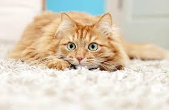
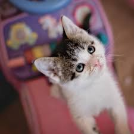

Biting
Most cats bite out of fear. They'd rather run away, but they feel cornered and can't. So they lash out. But fear isn't always the cause. Some cats seem to bite "out of the blue," for no reason at all. Kitty might be lying on your lap purring as you stroke her back. Then, Yow! She sinks her teeth into your wrist. This hurts your feelings.
Don't worry. Your cat loves you. She's just overly sensitive, like extremely ticklish people. The petting may feel good at first, but she can only stand so much. She wants you to stop!
Whatever her problem is, cat bites can be serious. Germs from a cat's mouth can enter the wound and cause infection. There's even a risk of raibes, if the cat has not been vaccinated.
Protect yourself by washing all bites or scratches with soap and water. And if the bite breaks the skin, go to the docter. Here are some tips for preventing bites in the first place:
- Only an adult wearing or a trained medical professional should handle an injured cat.
- Never interfere when cats are fighting.
- Be alert for feline warning signals-flattened ears, a thrashing tail, tense muscles, hitting, or spitting.
- If your cat can't handle being petted, try to understand. Accept and love her the way she is.
Picky Eater
Many cats have expensive tastes. They turn up their nose at dry food and insist on canned. Or they want a different flavor at every meal. The cat that demands variety may simply be spoiled. But one that only eats canned food is wise. Canned food usually contains more meat and more water. The water is important for cats, who tend to drink very little, and meat contains protein. Protein is an important nutrient, especially for cats. They need five times as much as dogs do, which is why cats can't survive on dog food. A lack of protein makes cats go blind and causes heart disease.
In the wild, cats get their meat from eating mice-the purr-fect food. But pet cats that are kept inside and not allowed to hunt are at risk. So it's up to us to feed him right. But suppose you do, and your fussy feline refuses to eat. Here are some things to try:
If other cats live in the house, make sure the non-eater is not being bullied. Try changing his food, moving his dish to a quieter spot, or feeding him from a saucer instead of a bowl. If you've been giving your cat refrigerated food, let it warm up first. It will smell stronger. But don't wait more than two days before seeing the vet. Your kitty might have sore gums or infected teeth, and sick cats can go down hill fast.

Scratching the Furniture
Oh, no! Your cat shredded the living room couch. Now what? First, understand that cats don't mean to destroy things; they just need to scratch. Scratching exercises their muscles, relieves stress, and conditions their claws. It also transfers smell from the scent glands between their toes to whatever they scratch. Thee smells warn other cats to stay away and make your pet feel more at home. To cats, scratching is as normal as breathing.
So, you can' make a cat stop, but you can teach him to scratch someplace else. The trick is to make whatever he's scratching unapealing. Stores sell double-sided tape that you can attach directly to furniture or put on sheets of cardboard. If you put it on cardboard, then you can lift the cardboard off when you want to sit. It works because cats hate sticky paws. Of course, you have to give your kitty an irresistible scratching post to use instead.